📈 Training Phases — Progress when you're ready, not on a fixed date
Cardio: Tue / Thu (~35–40 min)
Learn movements, test foot tolerance
Upper / Lower × 2
Move here only if: no excess soreness, feet stable, sleep good
Use original workout_plan_harshit.html
Only if feet improved + recovery excellent
⚠️ Foot Safety Adjustments (Key Changes from v1)
Based on your history of burning soles and foot sensitivity, this plan removes or modifies exercises that put excess load on feet while standing/walking. Removed for now: Reverse Lunge, Step-Up, Calf Raises, Farmer's Carry. Replaced: Leg Press covers quad/glute loading instead. Reintroduce calf raises and lunges after 6–8 weeks when feet are comfortable. Cardio: Done on Tue/Thu (separate from strength). Stationary Bike is your #1 option — minimal foot pressure. Avoid treadmill for now.
⚡ Universal Warm-Up — Every Session (8–10 min)
💪 UPPER A — Chest · Back · Arms
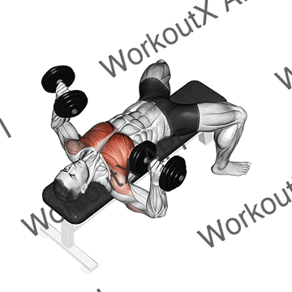
- Retract shoulder blades into bench before pressing
- Lower to chest level; elbows at ~45° to torso
- Control the descent — 2 seconds down
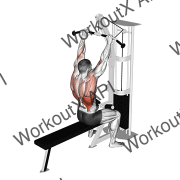
- Chest up and proud; slight lean back
- Pull to upper chest — never behind the neck
- Think "elbows to your back pockets"
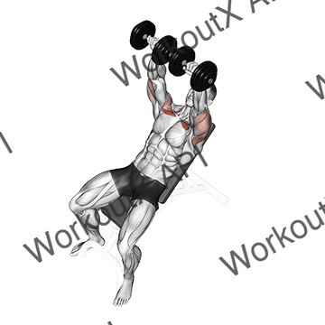
- Set bench to 30–45°; higher angles shift load to shoulders
- Elbows travel in a slight arc, not straight down
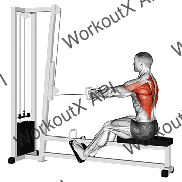
- Sit tall; chest up; don't round forward
- Squeeze shoulder blades together at end of each rep
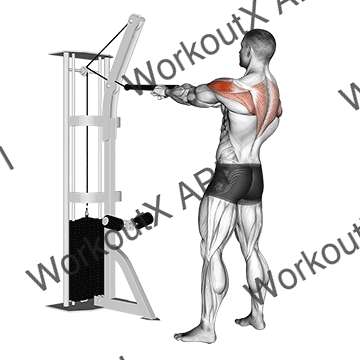
- Rope at eye level; pull to forehead with elbows HIGH and wide
- At end: thumbs point behind you (external rotation)
- Light weight — this is rehab/posture, not strength work
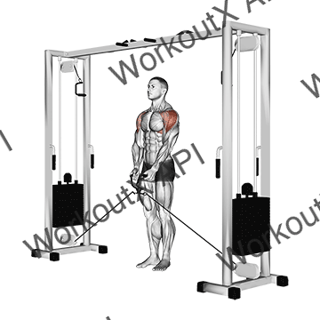
- Cable behind body at lowest setting; lead with elbow
- Stop at shoulder height; don't shrug
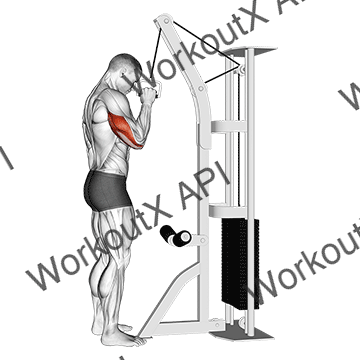
- Elbows pinned tight to sides; flare rope ends apart at full extension
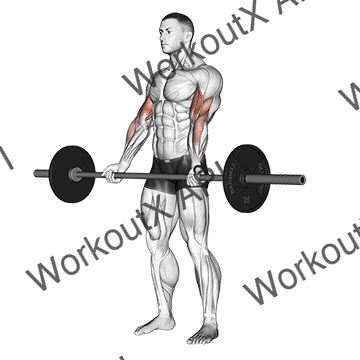
- Elbows pinned at sides; supinate as you curl
- 2–3 second controlled descent
🟢 LEGS + CORE — Quads · Hamstrings · Glutes · Core
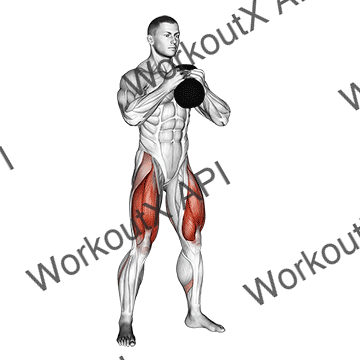
- Hold DB at chest; elbows inside knees at bottom
- Chest tall throughout; knees track over toes
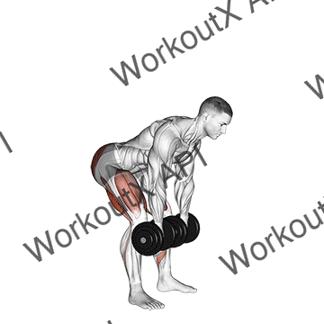
- Hip hinge — push hips back, not down
- Soft knee bend; feel deep hamstring stretch; stop before rounding back
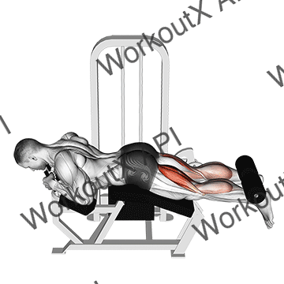
- Hips pressed down onto pad; no bridging
- Curl fully; lower slowly — 3 seconds down
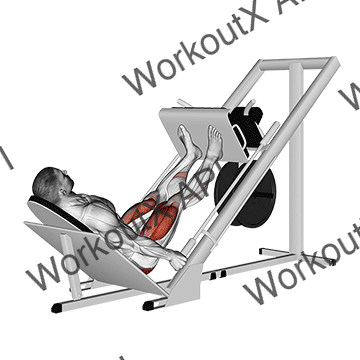
- Feet shoulder-width, mid-platform; don't let knees cave
- Lower until thighs ~90° to platform; don't lock out at top
- Foot-safe: seated, no balance demand, no plantar pressure
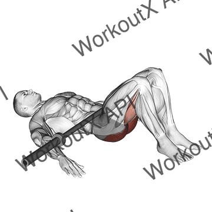
- Upper back on bench edge; feet flat, shoulder-width apart
- Dumbbell on hips (use a folded towel for comfort)
- Drive hips up; squeeze glutes hard at top; lower slowly
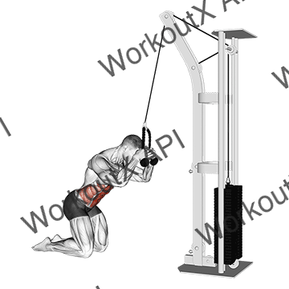
- Rope attachment at top; kneel facing machine
- Crunch with your ABS — not arms or hips; hips stay still
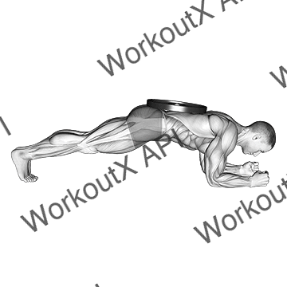
- Posterior pelvic tilt — tuck tailbone slightly
- Straight line: ears → shoulders → hips → heels
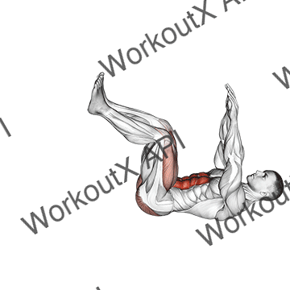
- Lower back FLAT against floor — non-negotiable
- Extend opposite arm and leg slowly; breathe out as you extend
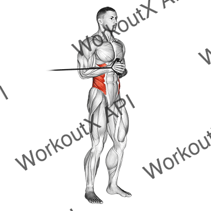
- Stand sideways to cable; hold handle at chest height
- Press straight out and hold 2s; resist the cable's pull to rotate
- Safer than Russian Twist — no spinal rotation under load
🟣 UPPER B — Back · Shoulders · Arms · Posture
- Chest up; pull to upper chest — never behind neck
- Think "elbows to your back pockets"
- Sit tall; squeeze shoulder blades together at end of each rep
- Pause 1 second at full contraction
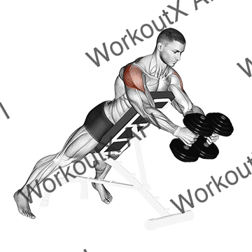
- Chest on incline bench; raise arms to shoulder height
- Pinch shoulder blades together at the top
- Rope at eye level; pull to forehead with elbows HIGH and wide
- Thumbs point behind you at end of movement
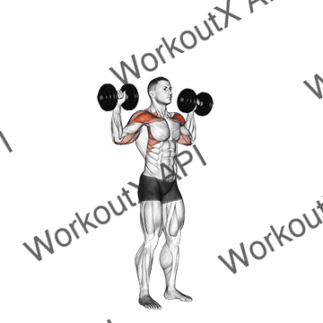
- Back supported; neutral spine; start at ear level
- Don't fully lock out — keeps tension on shoulders
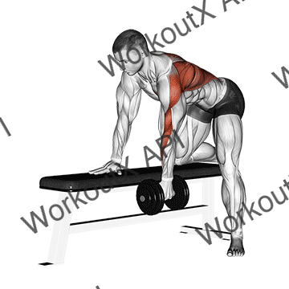
- Flat back; pull elbow toward hip — not shoulder
- Hold 1 second at top; feel the lat contract
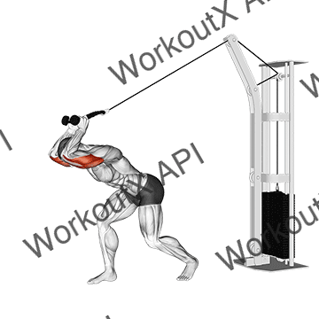
- Both hands on one dumbbell; elbows point to ceiling
- Lower behind head to full stretch; elbows stay close to ears
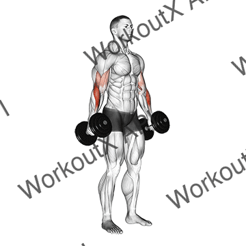
- Neutral grip (thumbs up) throughout; control full range
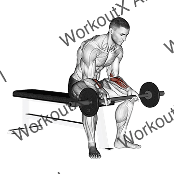
- Forearm rested on bench; only the wrist moves
- Wrist curl: palm up. Reverse: palm down. Light weight, full ROM
🚲 CARDIO DAY — Tuesday & Thursday
🧘 Daily Posture Routine — Every Day Including Rest Days (10 min)
Hunchback takes 3–6 months of daily consistency to visibly improve. Click any thumbnail to watch the tutorial.


📈 Progressive Overload
- Complete all sets at top of rep range with clean form → increase weight 2–2.5 kg next session
- Log weights every session (Notes app is fine)
- Phase 1: form over weight, always
🍽️ Nutrition Basics
- Aim for 300–500 calorie daily deficit for fat loss
- Protein: 140–160g/day (1.8g per kg bodyweight)
- Eggs, paneer, Greek yogurt, chicken, dal+rice, whey
😴 Recovery at 42
- 7–8 hours sleep — most muscle is built during sleep
- With 3-day plan: your off days ARE rest days — use them
- Foot symptoms = your primary recovery signal. If feet flare: reduce cardio first, not lifting
🚦 When to Progress
- → Phase 2 (4 days): no unusual soreness, feet stable, sleep good after 4 weeks
- → Phase 3 (PPL): symptoms much improved, recovery excellent, after 2–3 months
- Don't rush phases — consistency beats volume
🥗 Daily Diet Plan
Clean whole foods, great fiber (30.7g), healthy fats from avocado + nuts, 9hr IF window, no processed junk, Palak + Baigan for micronutrients.
125g vs 140–160g target. Add 1 more egg or an extra half-scoop of whey at lunch to close the gap by ~15g.
Low-carb (84g) may cause gym fatigue. Consider +1 roti or a banana pre-workout on Mon/Wed/Fri for better energy.
🗓️ What to Expect — Timeline
Weeks 1–4 (Phase 1): Learn movements, 3 days/week. Test foot tolerance on each session. Body adapts. | Weeks 5–8 (Phase 2): Add a 4th day, Upper/Lower × 2. Strength visibly increases. | Month 3+ (Phase 3): Full PPL if recovery is green. Real physique change becomes visible. Posture noticeably different. | Month 4–6: Significant fat loss if diet consistent. Muscle definition begins.